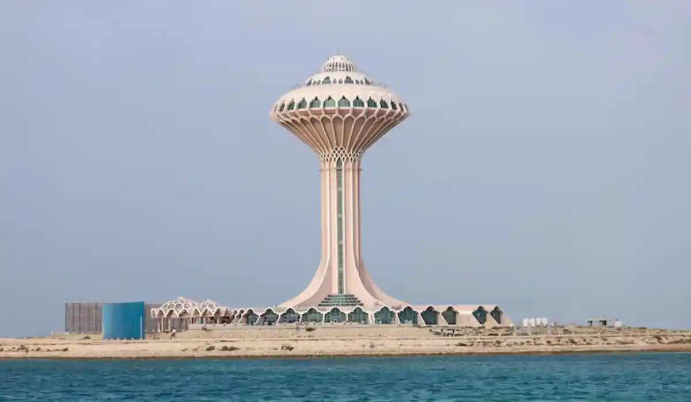

محامي ومكتب محاماة في الخبر لجميع القضايا. استشارة قانونية سريعة.

فريقنا يخدم كل مناطق وأحياء الخبر دون استثناء، بنفس سرعة الاستجابة ومعيار الخدمة.
يقدّم فريقنا في الخبر استشارة وتمثيلاً قانونيًا مرخّصًا للأفراد والشركات في إحدى أكثر مدن المنطقة الشرقية حيوية من الناحية السكنية والتجارية، مع متابعة كاملة عبر الواتساب من أول تواصل حتى إغلاق الملف.
الخبر مدينة ذات طابع مختلف قليلاً عن جارتها الدمام؛ فهي أكثر تركيزًا على الجانب السكني والتجاري والخدمي، وتستقطب عددًا كبيرًا من المقيمين والوافدين العاملين في الشركات الكبرى بالمنطقة الشرقية. الكورنيش، والمجمعات التجارية الكبرى، وقربها من جسر الملك فهد الرابط بالبحرين، جعلتها وجهة مفضلة للسكن والاستثمار العقاري، وهو ما ينعكس على طبيعة القضايا التي نتابعها فيها. كما تشهد المدينة إقبالاً متزايدًا من عائلات تنتقل إليها من مدن أخرى بالمملكة بحثًا عن نمط حياة أكثر هدوءًا مقارنة بالمدن الكبرى، وهو ما يخلق احتياجًا مستمرًا لخدمات قانونية تواكب هذا النمو السكاني المطّرد.
يتصدّر قانون العقارات والملكية قائمة الطلبات في الخبر، نظرًا للنمو السكني الكبير والإقبال على الشقق والفلل في أحياء المدينة الحديثة. كما نتابع عددًا لا بأس به من قضايا الفصل التعسفي ومستحقات نهاية الخدمة، خصوصًا مع كثافة العاملين في القطاع الخاص بالمدينة. وعلى الجانب التجاري، يبرز الطلب على تأسيس الشركات من قبل رواد أعمال يفتتحون أنشطة تجارية وخدمية في أحياء الخبر التجارية النشطة، إلى جانب تحصيل الديون التجارية بين الموردين ومحال التجزئة المنتشرة في المدينة.
نظرًا لقرب الخبر من جسر الملك فهد، نتابع أيضًا بعض الملفات المرتبطة بقطاع التجزئة والمستهلك والخدمات السياحية العابرة للحدود، إضافة إلى حوادث المرور والتعويضات التي ترتفع نسبيًا في مدينة بحجم الحركة المرورية بالخبر.
تخضع قضايا الخبر لنفس الهيكل القضائي المعتمد في المنطقة الشرقية، حيث تُحال القضايا التجارية للمحكمة التجارية، وقضايا العمل للمحكمة العمالية، والقضايا المدنية والأسرية للمحكمة العامة، مع متابعة إلكترونية شاملة عبر منصة ناجز لجميع مراحل القضية دون الحاجة لمراجعة شخصية متكررة. هذا التكامل الإلكتروني بين الجهات القضائية المختلفة يسهّل كثيرًا على عملائنا متابعة أكثر من ملف في آنٍ واحد إن لزم الأمر، دون تعقيد إجرائي إضافي.
من الحالات المتكررة: عائلة اشترت شقة في مجمع سكني جديد وتواجه خلافًا مع المطوّر حول مواصفات التسليم، أو موظف في شركة خاصة تم إنهاء عقده دون سابق إنذار ويحتاج لمطالبة بمستحقاته الكاملة، أو صاحب محل تجزئة يواجه نزاعًا مع مورّد حول جودة البضاعة المسلَّمة. في كل هذه الحالات، نبدأ باستشارة سريعة لتحديد أفضل مسار قبل أي تصعيد رسمي.
حالة أخرى شائعة: مستثمر عقاري اشترى عدة وحدات في مشروع واحد بهدف التأجير، ثم اكتشف أن المطوّر لم يلتزم بمواعيد التسليم المعلنة، مما أثر على خططه لتحصيل دخل إيجاري متوقع. في هذه الحالة، نساعد العميل على تقييم خياراته بين المطالبة بتعويض عن التأخير أو فسخ العقد إن كان ذلك ممكنًا نظاميًا، بناءً على بنود العقد الأصلي.
في أغلب نزاعات العقار السكني، تكفي مخاطبة رسمية للمطوّر أو الوسيط لتسوية الخلاف دون الحاجة لدعوى كاملة. أما في قضايا العمل التي تتضمن مبالغ كبيرة أو رفضًا واضحًا من صاحب العمل للتسوية الودية، فإننا ننتقل مباشرة إلى التمثيل الكامل أمام المحكمة العمالية لحماية حقوق العميل دون تأخير. نوضح لك دائمًا التكلفة والوقت المتوقعين لكل مسار قبل أن تقرر أيهما تفضّل المضي فيه.
علامات تستدعي التواصل الفوري: استلام وحدة سكنية بمواصفات مخالفة للمتفق عليه، تلقّي خطاب إنهاء خدمة دون سبب واضح، أو خلاف مع مورّد أو عميل حول تنفيذ عقد تجاري. معالجة هذه الإشارات مبكرًا يوفر عليك تكاليف قانونية أكبر لاحقًا ويحفظ حقوقك بشكل أفضل. كما ننصح بالتواصل معنا فور استلام أي إشعار رسمي من جهة حكومية، حتى لو بدا الأمر بسيطًا، لأن الرد الصحيح في الوقت المناسب يفرق كثيرًا في نتيجة القضية لاحقًا.
يبدأ التواصل عبر رسالة واتساب موجزة تصف موقفك، يليها تقييم سريع من محامٍ متخصص، ثم خطة عمل واضحة المدة قبل أي إجراء رسمي. نحرص على إبقائك على اطلاع بمستجدات ملفك أولاً بأول، خصوصًا في القضايا العقارية التي قد تتطلب متابعة عدة أطراف في آنٍ واحد. كما نوفر تحديثات دورية حتى في الفترات التي لا يوجد فيها تطور جوهري، حتى تبقى مطمئنًا لسير الإجراءات.
في القضايا العقارية، يفيد تجهيز نسخة من عقد الشراء أو الإيجار ومراسلات المطوّر إن وجدت. في قضايا العمل، يساعد وجود نسخة من عقد العمل وخطاب إنهاء الخدمة. لا حاجة لأي مستندات في مرحلة الاستشارة الأولى؛ يكفي وصف موقفك بوضوح، ونطلب المستندات الرسمية فقط عند الانتقال لمرحلة المطالبة الفعلية. في القضايا التجارية بين موردين وتجار تجزئة، تساعد الفواتير وسجلات التوريد في تسريع تقييم الملف بشكل كبير.
يعمل فريقنا في الخبر بتنسيق مباشر مع فرق الدمام والظهران، نظرًا للتداخل الكبير بين هذه المدن الثلاث من الناحية السكنية والتجارية؛ فكثير من سكان الخبر يعملون في منشآت بالدمام أو الظهران، والعكس صحيح. نضمن متابعة موحّدة لملفك بصرف النظر عن مدينة العمل أو السكن، سواء كان الملف عقاريًا أو عماليًا أو تجاريًا.
من الأسئلة المتكررة: هل يستحق النزاع مع المطوّر رفع دعوى قضائية أم يكفي التفاوض المباشر؟ نساعدك على تقييم ذلك بموضوعية بناءً على استجابة الطرف الآخر وحجم الضرر الفعلي. سؤال آخر شائع: هل يؤثر رفع قضية عمل على فرص الحصول على وظيفة مستقبلية؟ نوضح للعميل أن حقوقه القانونية مكفولة نظاميًا، والقرار بالمضي في الإجراء يبقى له بعد فهم كل الاحتمالات المتاحة.
خبرتنا في الخبر تجمع بين المعرفة العملية بسوق العقار السكني النشط والتعامل المتكرر مع قضايا العمل في القطاع الخاص، وهو ما يجعلنا أقرب لفهم احتياجات سكان المدينة الفعلية بدل تقديم استشارة عامة لا تراعي خصوصية السوق المحلي، ونفخر بمتابعة كل ملف حتى إغلاقه الكامل.
ندرك أن كثيرًا من عملائنا في الخبر إما عائلات استثمرت مدخرات كبيرة في شقة أو فيلا جديدة، أو موظفون يعتمدون على راتبهم الشهري بشكل كامل. نلتزم بالتعامل مع كل ملف بجدية تامة بصرف النظر عن حجمه المالي، ونوضح بصراحة الخيارات المتاحة لك، بما في ذلك خيار التسوية الودية إن كان ذلك في مصلحتك الفعلية بدل الدخول في نزاع طويل ومكلف.
يغطي فريقنا في الخبر جميع الأحياء والمناطق دون استثناء، بما في ذلك كورنيش الخبر، العقربية، الثقبة، والعليا، بنفس سرعة الاستجابة ومعيار الخدمة بصرف النظر عن موقعك داخل المدينة.
نعم، نتابع بانتظام خلافات التسليم والمواصفات مع المطورين العقاريين في المجمعات السكنية الحديثة بالخبر، بما في ذلك مشاريع الواجهة البحرية الجديدة.
نعم، نتابع بانتظام قضايا فصل تعسفي ومستحقات نهاية خدمة لموظفين في شركات القطاع الخاص المنتشرة في المدينة، من شركات صغيرة إلى فروع شركات إقليمية كبرى.
نعم، خدماتنا تغطي الخبر بالكامل بما في ذلك المناطق القريبة من الجسر والمناطق التجارية المحيطة به، وأي نزاعات تجارية مرتبطة بالحركة العابرة للحدود.
في معظم المراحل نعم، مع الحضور فقط عند الضرورة القضائية في جلسات محددة أمام المحكمة، ونحرص على تقليل هذه الجلسات قدر الإمكان.
الاستشارة الأولية مجانية دائمًا بصرف النظر عن نوع القضية؛ تكلفة التمثيل الكامل تُحدَّد بشفافية بعد فهم تفاصيل ملفك، ودون أي رسوم إضافية غير متوقعة تظهر لاحقًا في مراحل المتابعة.
نعم، الواتساب متاح على مدار الأسبوع، ونعطي أولوية للرد السريع على الحالات العاجلة حتى خارج ساعات العمل الرسمية.
نعم، نساعد أصحاب المحال التجارية في مراجعة وصياغة عقود الإيجار التجاري بما يحمي حقوقهم بخصوص التجديد والصيانة والإخلاء، ونوضح أي بنود قد تكون مجحفة قبل التوقيع النهائي على العقد. كما نساعد في تفسير أي بنود غامضة تتعلق بزيادة الإيجار السنوية أو مسؤولية الصيانة بين المالك والمستأجر.
تواصل مع محامٍ مرخّص خلال دقائق عبر الواتساب — في أي مدينة بالمملكة.
ابدأ الاستشارة الآن